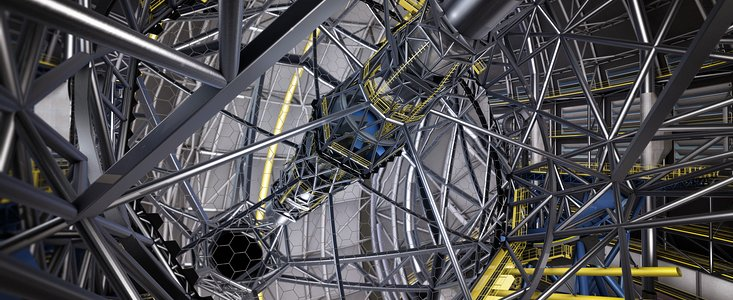

Ekstremalnie Wielki Teleskop (ELT) to największy teleskop optyczny na świecie, który jest obecnie w budowie na pustyni Atakama w Chile. ELT będzie miał zwierciadło główne o średnicy 39,3 m, co jest pięć razy więcej niż największe zwierciadła obecnie używane w teleskopach optycznych.
Budowa ELT rozpoczęła się w 2014 roku i ma potrwać do 2027 roku. W 2023 roku budowa jest w zaawansowanym stadium, a większość elementów teleskopu jest już wyprodukowana lub jest w trakcie produkcji.
Budowa ELT
ELT będzie składał się z trzech głównych elementów:
Zwierciadło główne będzie składać się z 798 sześciokątnych segmentów, które zostaną połączone w jednolitą powierzchnię.

Zwierciadło główne ELT
Teleskop optyczny będzie składał się z systemu soczewek i luster, które skupiają światło z gwiazd i innych obiektów na matrycy kamery.
Teleskop optyczny ELT
System optyczny adaptacyjny będzie kompensował zakłócenia atmosferyczne, aby zapewnić wyraźny obraz obiektów obserwowanych przez teleskop.
Schemat systemu optycznego ELT
mają nadzieję, że ELT pozwoli im na dokonanie przełomowych odkryć w astronomii. Teleskop będzie w stanie obserwować obiekty, które są zbyt słabe lub zbyt odległe, aby można je było zobaczyć za pomocą mniejszych teleskopów. ELT będzie również w stanie obserwować w zakresie światła podczerwonego, który pozwala na zobaczenie obiektów, które są zasłonięte przez chmury pyłu lub gazu.
ELT ma szansę zrewolucjonizować naszą wiedzę o wszechświecie. Teleskop może pomóc astronomom zrozumieć, jak powstały i ewoluowały gwiazdy i galaktyki. ELT może również pomóc astronomom w poszukiwaniu planet pozasłonecznych, które mogą być zdolne do podtrzymywania życia.
Polska w ELT
Polska jest jednym z krajów partnerskich projektu ELT. Polska firma Astrium Space Systems, obecnie Airbus Defence and Space, wyprodukowała 150 z 798 segmentów zwierciadła głównego. Polska firma Astronika dostarczyła również systemy optyczne dla teleskopu.
Planowane otwarcie ELT
ELT ma zostać otwarty w 2027 roku. Po uruchomieniu teleskop będzie dostępny dla astronomów z całego świata.